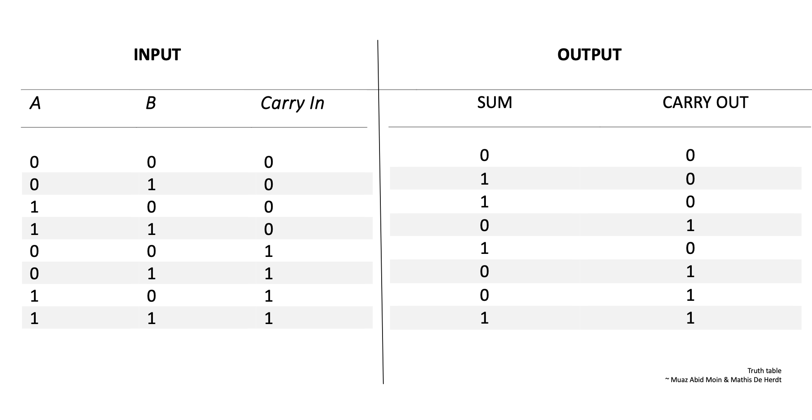
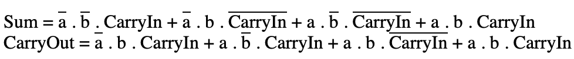
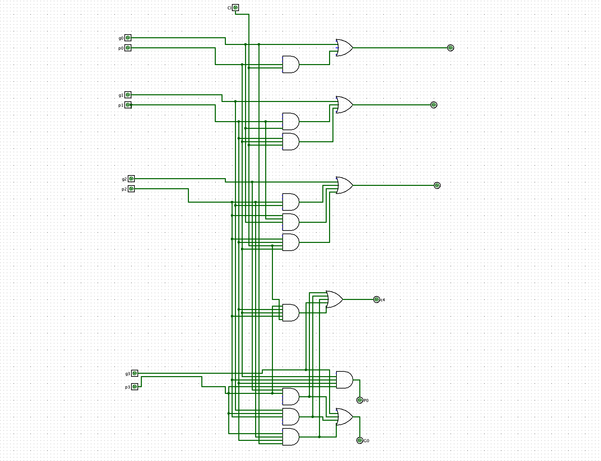

Dit verslag werd opgesteld door:
De oplossing bestaat uit de volgende bestanden (geef alle bestanden op):
Geef een gestructureerd verslag van de oplossing. Gebruik figuren (bijvoorbeeld screenshots) waar je denkt dat ze een bijdrage leveren. Gebruik eventueel subtitels om structuur te brengen. Zorg ervoor dat alle onderdelen van de opgave klaar en duidelijk besproken worden. Verduidelijk hoe je tot de oplossing bent gekomen.
In de eerste oefening moeten we een 1-bit full adder (met een carry in en een carry out) bouwen. Een adder heeft 3 inputs: twee bits om op te tellen (A en B) en een carry-in. Het heeft twee outputs: de som (S) en de carry-out.
We bepaalden de inputs en de outputs om vervolgens een waarheidstabel te kunnen maken. We onderzoeken wanneer de som gelijk is aan 1 en wanneer de carry gelijk is aan 1. Een truth table zal dit mooi kunnen weergeven. 

Wanneer we de formules voor SUM en CarryOut correct hebben toegepast, zijn we in staat een circuit te bouwen. Door gebruik te maken van XOR gate hebben we het circuit kunnen verkleinen. Het resultaat ziet u hier:
In oefening 2 moeten we een 12-bit two's complement ripple carry adder bouwen. Dit opdracht is relatief eenvoudig, maar op voorwaarde dat de 1-bit adder correct functioneert. We hebben 12 van deze 1-bit adders met elkaar verbonden, elk ontvangt input van de opgesplitste 12-bit inputs en geeft hun carry's door. Als de carry-in en carry-out van de meest significante bit verschillend zijn (de ene is 1 en de andere is 0), dan is er een overflow. Dit betekent dat als de carry-in en de carry-out beiden 1 zijn of beiden 0 zijn, er geen overflow is.

In oefening 3 moesten we een 12-bit two's complemetn carry lookahead adder ontwerpen. We maakten hierbij dus gebruik van de 4-bit adder circuits die we eerder hadden gemaakt. Een carry lookahead adder, afgekort als CLA, gaat "voorspellen" wat de carry-in gaat zijn voor elke bit. De CLA gebruikt deze formules om dus een propagate en een generate te berekenen. Deze propagate en generate kunnen we op hun beurt dan weer gebruiken om de noodzakelijke berekeningen uit te voeren. De relevante formules voor het construeren van deze CLA worden meegegeven in onderstaande afbeelding.


Deze 4-bits Carry Lookahead Adder heeft twee functies, namelijk het berekenen van de carries en de sommen. Dit heeft dezelfde structuur als de reeds bestaande CLA, maar voert uitsluitend de berekeningen uit voor de propagates en generates. 
Zoals opgemerkt, maken we geen gebruik van het berekenen van de carry-out. Daarom kunnen we overgaan naar het gebruik van een kortere 1-bit adder. Dit ziet er als volgt uit:
Nu zullen we alles wat we eerder hebben uitgelegd implementeren om onze 12-bit two's complement Carry Lookahead Adder te maken. In onderstaande afbeelding ziet u ons eindresultaat.

De maximale latency voor combinationele circuits wordt bepaald door het langste pad. Stel dat we voor elke gate bij de 12-bit two's complement Carry Lookahead Adder een latency E hebben. Dan betekent dit dat we voor elke 4 bit Carry Lookahead Adder een latency delay hebben van 5E, en voor de grotere CLA een latency delay hebben van 2E maar dit gebeurt allen echter parallel. De totale maximale latency zou dan de som zijn van de latency van één 4-bit CLA blok plus de latency van de carry lookahead logica, wat resulteert in een totaal van 7E.
Deze oefening dient om onze gemaakte 12-bit two's complement Carry Lookahead Adder te testen met onze 12 bit Ripple Carry Adder. Indien de Output hetzelfde is kunnen we besluiten dat de onze 12-bit two's complement Carry Lookahead Adder correct functioneert. Om de latency te bepalen van beide adders zullen we de het aantal gates gaan tellen van de 12-bit ripple carry adder. Dit kan men noteren als 11 keer de latency van een 1 bit adder. Aangezien deze latency gelijk is aan 2E, kan men dus besluiten dat de totale latency gelijk is aan 2E. En zoals u weet heeft onze 12-bit two's complement Carry Lookahead Adder een latency van 7E. Dus kunnen we besluiten dat onze 12-bit two's complement Carry Lookahead Adder 3,14 keer sneller is dan de 12-bit Ripple Carry Adder.

Voorbeeld: